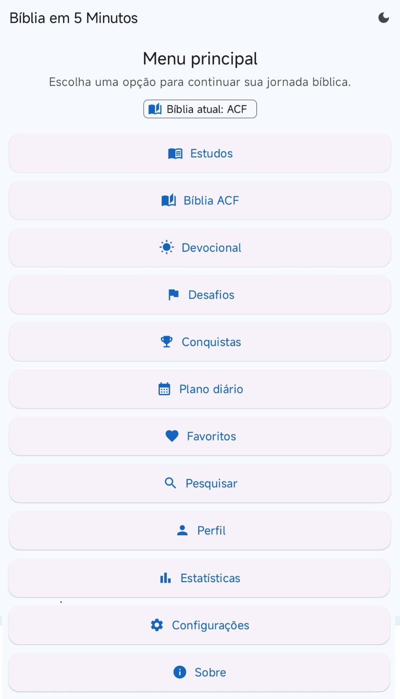
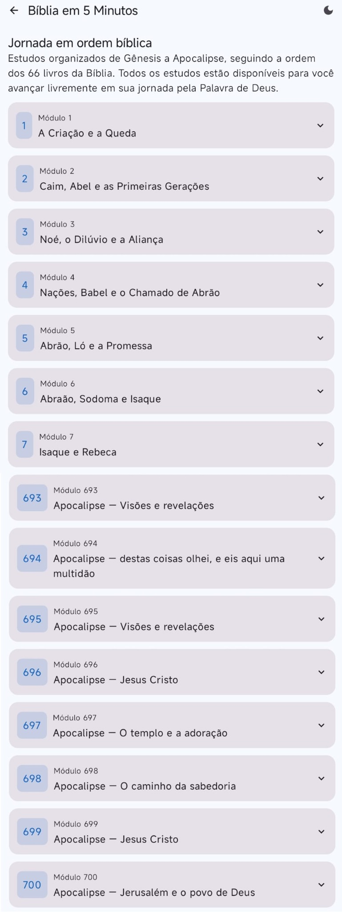
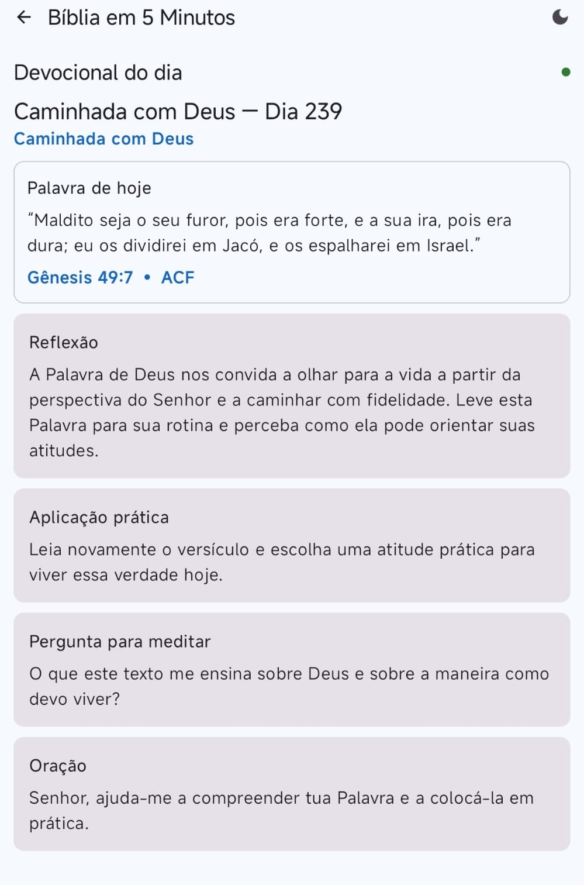
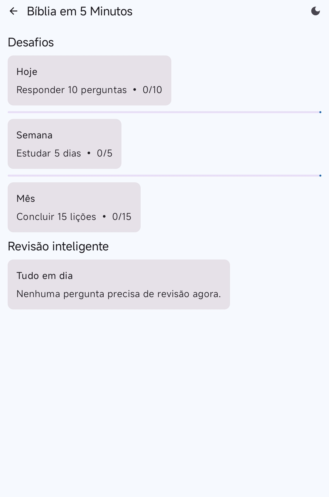
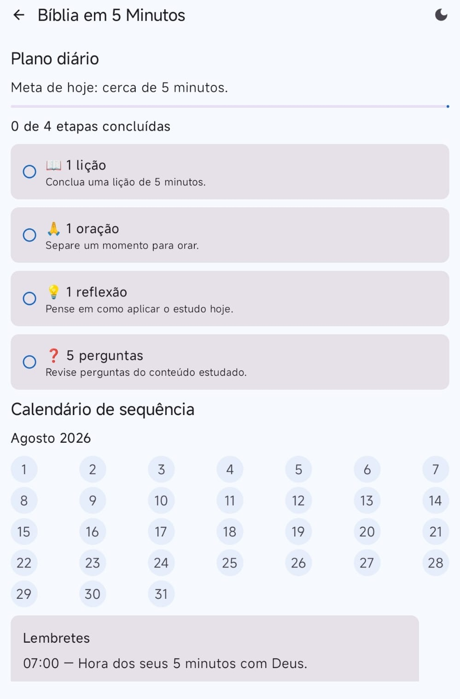
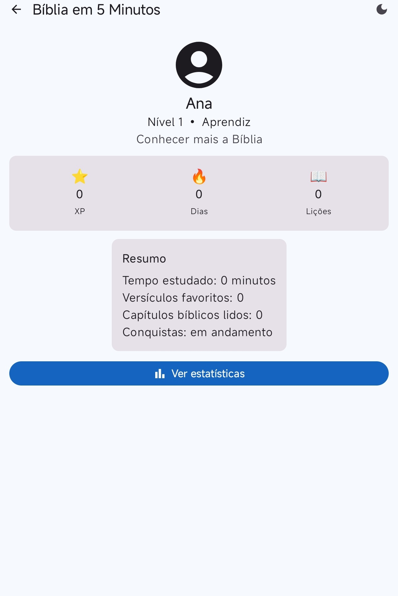
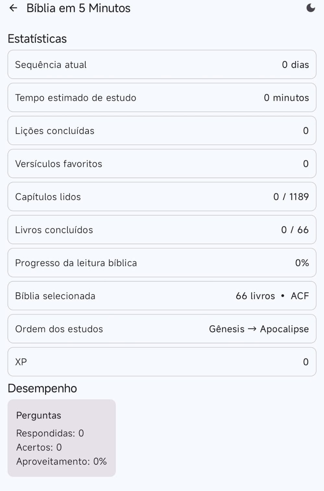
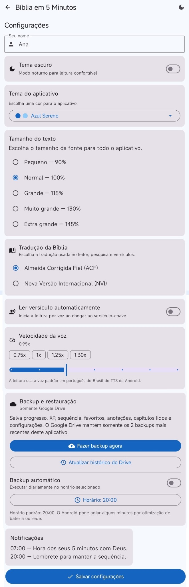

Estudos bíblicos
Conteúdo organizado por módulos para estudar passagens e avançar de Gênesis a Apocalipse.
Uma jornada bíblica clara e acessível para transformar poucos minutos do dia em leitura, reflexão, oração e aprendizado. Estude no seu ritmo, acompanhe o progresso e mantenha a Palavra de Deus por perto.
O aplicativo reúne estudo bíblico, leitura completa, devocional e acompanhamento pessoal em uma interface simples, com tema claro e escuro e opções de acessibilidade.
Estudos organizados de Gênesis a Apocalipse, seguindo a ordem dos 66 livros. Todos os módulos ficam disponíveis para navegação livre.
Escolha entre Almeida Corrigida Fiel (ACF) e Nova Versão Internacional (NVI). A tradução selecionada é aplicada no leitor, nos estudos e nas referências exibidas.
Conteúdo organizado por módulos para estudar passagens e avançar de Gênesis a Apocalipse.
Versículo, reflexão, aplicação prática, pergunta para meditar e oração para acompanhar o dia.
Metas diárias, semanais e mensais, além de revisão inteligente para reforçar o aprendizado.
Uma rotina objetiva com lição, oração, reflexão e perguntas, além do calendário de sequência.
Text-to-Speech do Android em português do Brasil, com controle de velocidade para uma leitura mais confortável.
Backup e restauração de progresso, preferências, favoritos, anotações e capítulos lidos, com histórico controlado pelo app.
Salve versículos, estudos e notas para retornar rapidamente ao conteúdo mais importante para você.
Acompanhe XP, sequência, lições concluídas, capítulos lidos, livros concluídos e desempenho nas perguntas.
Tema claro ou escuro, cores do aplicativo e diversos tamanhos de texto para melhorar conforto e leitura.
As imagens abaixo estão apresentadas na mesma sequência em que foram fornecidas, mostrando a experiência desde a abertura até as configurações.








O Bíblia em 5 Minutos armazena preferências e progresso para oferecer continuidade entre as sessões. Quando o usuário utiliza o backup, o aplicativo pode acessar o Google Drive mediante autorização da própria conta Google. O app também utiliza Google AdMob para publicidade.
Ler a Política de PrivacidadeConsulte a política completa para detalhes sobre publicidade, backups, permissões e serviços de terceiros.
Utilize o canal de suporte para dúvidas sobre o aplicativo, backup, funcionamento ou privacidade.